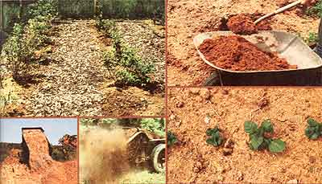

Ah, summertime! Your tomatoes are blooming and your corn stalks are high! The veggies on your dinner table have that just-plucked crispness you can't get any other time of year. In short, the entire garden is busting its britches with delicious bounty!
Well, at least that's what's supposed to be happening. But maybe your harvest isn't turning out to be a cupboard stuffer after all. Perhaps that patch of "cropping" ground-the spot that looked so good when you cleared it-is really composed of such heavy clay that your seeds would need jackhammers to sprout. Or possibly your tilled soil is so sandy and light that water rushes by your vegetables before the parched plants can even "stick out their tongues". On the other hand, maybe your ground is very fertile . . . so much so that you can't find the victuals for the weeds!
My friend, if you've run into a passel of problems like these and want to remedy the situation, let me suggest that you enlist the aid of the soil's best friend . . . "wood wastes"
I know from my own experience that ground-up leaves, bark chips, sawdust-indeed, all wood pieces and products -are ideal conditioners for almost any kind of earth. For instance, my first homestead had a heavy clay soil that became downright gluey after a rainfall . . . but turned (magically) into ancient Sumerian writing tablets as soon as the sun came out. Several repeated applications of sawdust-both tilled in and laid on as mulch-loosened up that ol' clay, aerated the soil, added healthy humus, and supercharged my sunflowers!
A few years later I moved to Florida . . . and was faced with ground so sandy the grains'd slip between the fingers of a closed hand. I "planted" wood chips to handle that problem. The long-lasting "timber trifles" helped the dirt retain moisture and-used as mulch-fended off the hot southern sun. (In fact, testing proved chip-covered soil to be as much as 20° cooler than was its well-baked exposed surface! )
The truth is, I'd be hard pressed to say enough good things about woodwastes. The tree products make excellent soil conditioners (which encourage the activities of beneficial micro-organisms) . . . and fine sun-shedding, water-holding, weed-stopping, earthworm-luring, and garden-pleasing mulches. (One caution, though: Woodwastes-or any other crop "blanket"-should not be applied around heat loving plants too early in the season . . . or the insulating fragments will actually retard growth.)
In addition, the "lumber leavings" provide small amounts of nutrients as they decompose. In fact, in plain (pickup-load-sized) English . . . half a ton of "ordinary" sawdust will supply about 2 pounds of nitrogen, 1 of phosphorus, 2 of potash, 3 of lime, and 1/4 pound of magnesium. Not bad for some leftover tree and leaf bits!
No matter where you live-above a subway or in the sticks-chances are you can locate a supply of woodwastes. For one thing, if any trees grow nearby, it will be a simple matter to collect leaves, rotted logs, and small branches from around the standing trunks. And if your foliage-bearing neighbors border any utility lines, the power companies will send out a tree crew once in a while complete with snarling chain saws and roaring wood chippers-who'll grind up mounds of garden helper. Such workers accumulate tons of plant shards daily and are only too glad to get rid of them.
Or you might be lucky enough to have a woodlot. If so, you can gather tree-shed humus from the forest floor . . . or buy a home-sized, mechanical shredder/chipper (Amerind Mackissic, Inc., Dept. TMEN, Box 111, Parker Ford, Pennsylvania 19457 offers its Model 12P for just over $500) that'll turn leaves, three inch branches, newspapers, straw-and more - into a fine-particled plant ally.
Heck, even if there's not a tree within 100 miles of your own sweet home, you can certainly find a woodworking shop or furniture factory that discards truckloads of shavings and would probably thank you (when you really should be grateful to them, instead) for hauling their wastes away.
At this point, you're probably telling' yourself, "Hold on! This guy claims that chips and sawdust will solve practically all my garden problems . . . and can be found for free, besides. I don't know. It seems to me I've heard of some drawbacks to using wood wastes . . . ."
Well, I've encountered a few negative reports about tree trimming's myself, but-as far as I'm concerned-the criticisms just aren't true. One of the most common "myths", for instance, is that board bits or sawdust will put too much acid into your soil (old farmers express this belief by saying wood "sours" the ground). The truth of the matter is that the end product of tree-waste decomposition is-if anything-mildly alkaline.
Another "tall tree tale" claims that wood will make your dirt toxic. But that charge has no factual basis either. Of course, if your ground conditioner is stuck in a perpetually airless and boggy clay soil, it could produce some harmful by-products. But such a mishap would be the fault of your backyard swamp-not of the wood-and would occur with any organic garden additive.
Wood wastes don't seem to spread tree diseases, either. It's true the inner bark of some trees may possibly carry wood eating insects . . . and such critters certainly wouldn't be too good for your fruit trees. However, if you have any fears along this line, just compost the chips or sawdust for a while and the hot decay process will purify the material.
As you may have guessed by now, I think woodwastes are God's gift to gardeners. I must confess, though, that one common criticism of such soil additives does have merit: the charge that tilled-in timber bits "steal" nitrogen from the soil. You see, the bacteria that convert woodwastes to humus need this valuable plant-stimulating element . . . but soil building organisms simply can't obtain all the nitrogen they require from wood chips or (especially) from fast-decomposing sawdust, so the "mini-critters" borrow some "N" from the ground surrounding them. Of course, this process leaves less of the essential nutrient available to aid the growth of your plants.
In the long run, wood decomposition and the humus that results from it-will actually add nitrogen to your soil. But while the wood's still decaying, you'll probably have to supplement the garden's supply of the element. Fortunately, the task of getting more nitrogen in the ground is an easy one. You can, for example, add cottonseed or alfalfa meal to your woodwastes. Or-on the other hand -you might use an organic nitrogenous fertilizer . . . or compost your tree pieces with cow or chicken manure.
I've found the best way to solve this garden dilemma, though. I simply use sawdust as bedding in my horse stalls. The fragments perform admirably in the steeds' parlors (the ground-up wood retains moisture . . . so well that saloon-keepers used to cover their floors with it). More important, the "tree sand" gets to load up on animal-given nitrogen. When the sawdust is soaked, I till it into my soil . . . and the results are healthy plants and heavy yields.
Of course, people have used trees as fuel, furniture, food-and more-for centuries. But a lot of folks are just beginning to appreciate the "leftover" benefits of wood. In fact, I know several agricultural businessmen who've profited by switching from straw to woodwastes, including an orchardist who saved $180 on tree mulch . . . a blueberry grower whose crop yield doubled . .. and a dairyman who cut his cattle bedding costs by $5,000 in one winter alone!
And judging from the produce that "crops up" in my vegetable patch, I ain't done so bad by the technique myself. So take my advice: If you want to improve the plant life around your homestead . . . don't "waste" woodwastes!
Once you find you've been bitten by the woodwastes bug, you'll probably want to scrounge up a supply of free tree leavings. And the first source that'll likely come to mind may be what else?-a sawmill.
Well, time was when that logic made a lot of sense. In those days anyone who approached a lumber plant was immediately hit by heavy clouds of smoke. Then (if the person wasn't driven away by the acrid pall) he or she would dimly perceive the cone-shaped incinerators where-gasp!-they actually burned precious bark, sawdust, and slabs . . . just to get rid of them!
Nowadays, however, things are different . . . because sawmills are wising up. Let me tell you about a bark-hunting visit I made to a plant in McClure, Pennsylvania just to show what I mean.
When I drove up toward Jim Bickel's sawmill, I expected to see the traditional globs of billowing smoke. Instead, I encountered vast mounds of decomposing wood pieces . . . piles so large they practically rearranged the region's topography! Huge front-end loaders were shifting materials in the various "hills" ... emptying a fresh load here carting some of a darker pile off over there. I parked my pickup truck near a butte of bark chips just before a huge farm truck-its high sides stuffed with wood leavings-forced its way by my vehicle. After that fellow roared past, I heard a large chipping machine whining away near a mountain of leftover lumber slabs.
Surprised by the strangeness of these sights and sounds, I hunted up Mr. Bickel and asked what was happening to all of his wood wastes.
"Waste!" he replied. "You see those mountains of sawdust? Farmers buy that stuff from us now. They use it for cattle bedding."
And I'd thought my stall idea was original! "What about those big piles of bark?" I asked (hoping he'd be willing to unload some of this "useless" material).
"Why, we sell those pieces to nurserymen and locals as mulch for shrubbery and berry patches."
"Oh." I gazed longingly at his massive collection of bark. "But why are some of the piles light in color while others are dark?"
"That's 'cause we compost the bark for five full years before selling it," said Jim. "But what happened to all those free pieces of leftover slabs?" I asked. "You must still have a lot of them that you have to get rid of!"
"Naw. We chip all the slabs now. Manufacturers of pressed wood buy all those little pieces. They make particle board out of 'em."
As you can imagine, I was getting discouraged. Still, I was sure there were some wood by-products my businessman friend didn't utilize. "How about all those branches? You know, the slash wood you leave out in the forests?"
"Don't leave 'em," Jim replied. "We cut the limbs up and sell 'em to folks for firewood."
Clutching at straws, I cried, "What about the stumps? And the roots?! I bet you don't bother with them!"
Mr. Bickel laughed. "I wish I could oblige you, but a lot of lumber outfits use hydraulic machines and lift that taproot right out of the ground. No sir, these days we just use up the whole dang tree."
This little story should convince you that the of "sawmill freebie" is quickly becoming a thing of the past (I've even heard of lumber people who power steam turbines with "wastes" and generate their own electricity!). So believe me, if you can find a mill in your neck of the woods that still has shavings to spare, don't ask any questions. Just drive around back and load up . .. all that you can haul.
|
 PHOTOS BY THE AUTHOR CLOCKWISE FROM TOP LEFT: The wood chips spread between the rows of this berry patch will help the soil stay cool and moist .... ""Tree trimmin's""do borrow nitrogen from the soil, but you can solve this problem by combining wood bits with some good of nitrogen-heavy horse manure! . . . A solid ""blanket "" of woodwaste mulch can also wipe out weeds! . . . If you have a lot of territory to cover, you may need a manure spreader to strew the soil helper on your fields .... This truck is NOT unloading woodwastes at the world's most heavily mulched garden . . . the vehicle is stacking bark chips for ""aging"" at a wood-wise sawmill! |
|
|